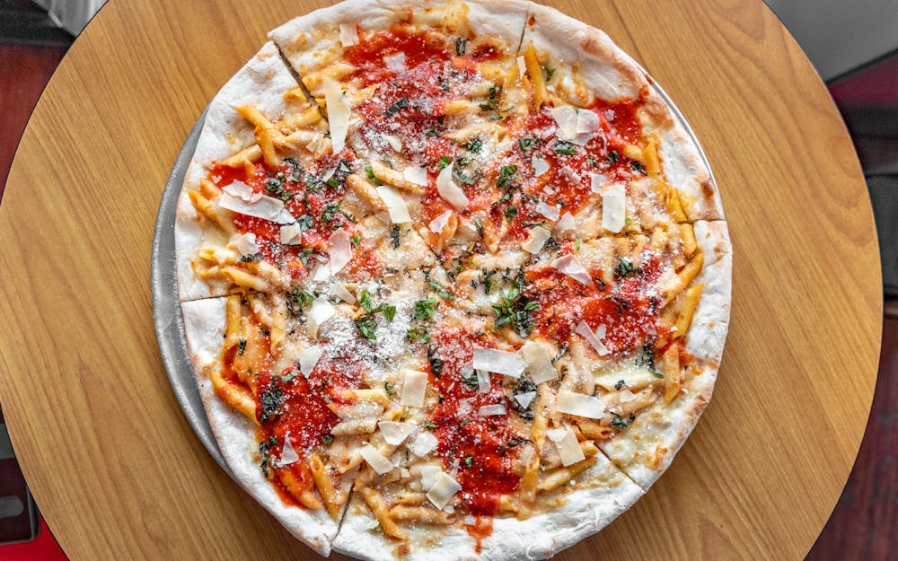
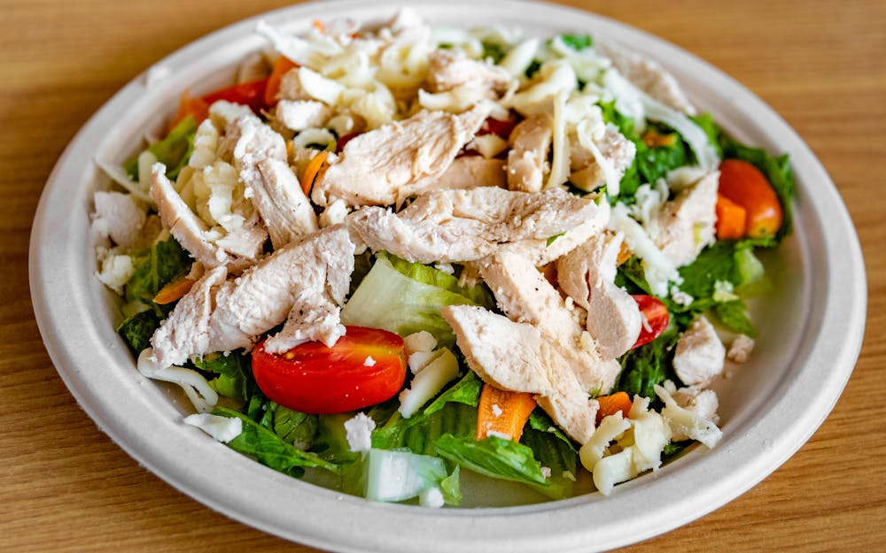
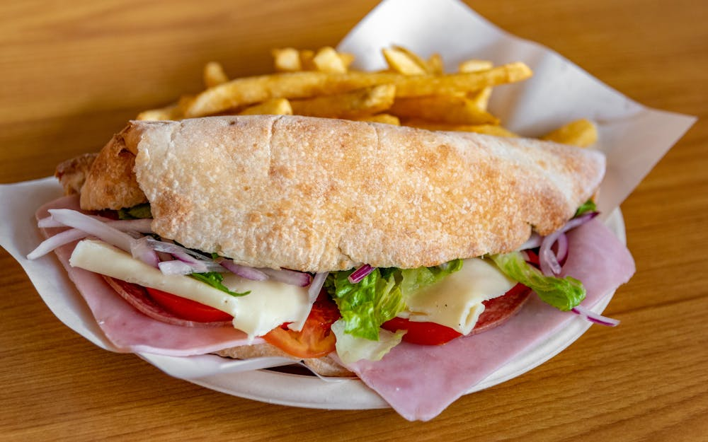
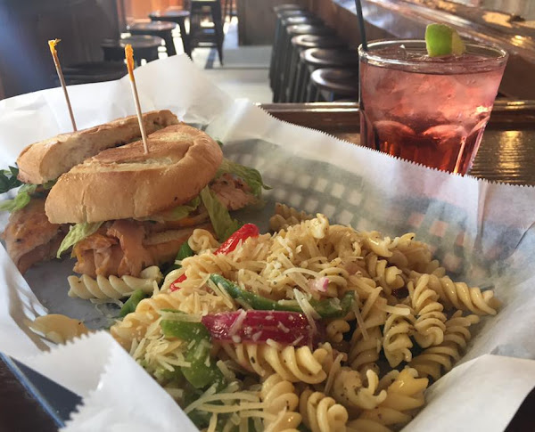
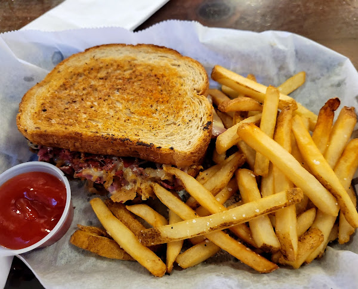
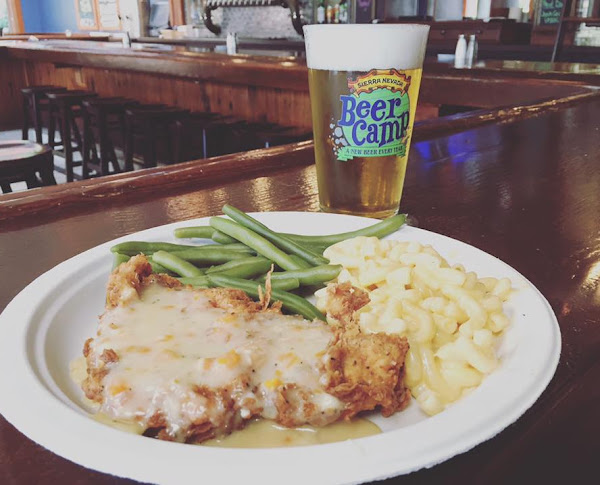
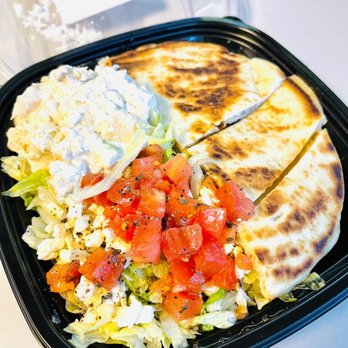
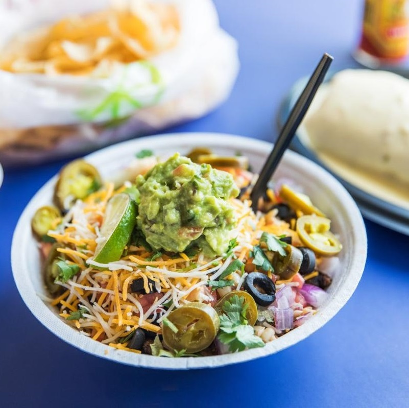
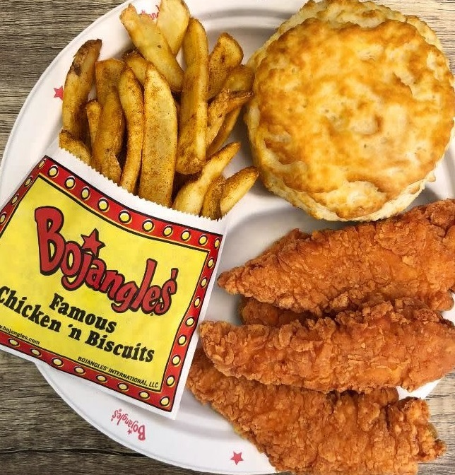

Wood-fired Pizza

Looking for some top picks for lunch at UNCG? Well, here, I'll list 3 of my go-to spots! Depending on how hungry you are, what you've got a taste for, or your price point, there's always a good option nearby. Whether it's hot pizza, a stacked sandwich, or something southern, I've got you covered. Let's check it out...
Slices Pizza by Tony
Perfect for a quick and easy lunch! Tony's is a local joint with tons of New York-style, large-slice pizza options. They'll bring your slice back to life in seconds by tossing it into their wood-fired oven!
Chicken Salad

Fresco Sandwich

Old Town Draught House
Great for lunch or dinner! Let's be clear, though: it's a pub! But, students of all ages can enjoy the fantastic wraps, split some apps, and a wide variety of hot sandwiches.
Chicken Sandwich

The Reuben

Special Lunches

The Cafe
Right across from the bookstore and in the center of the campus is the EUC Cafe, full of mini versions of restaurants you're familiar with! They take flex pay and have a huge dining area which is always lively. I'll list a few of my favorite picks!
Pita Delite

Salsaritas

Bojangles
